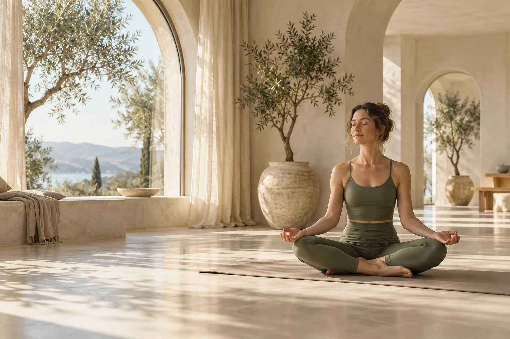
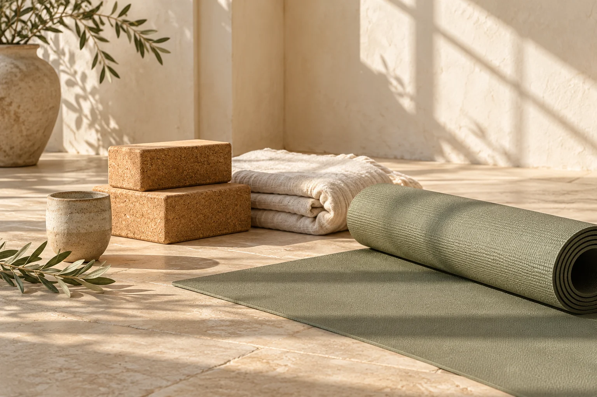
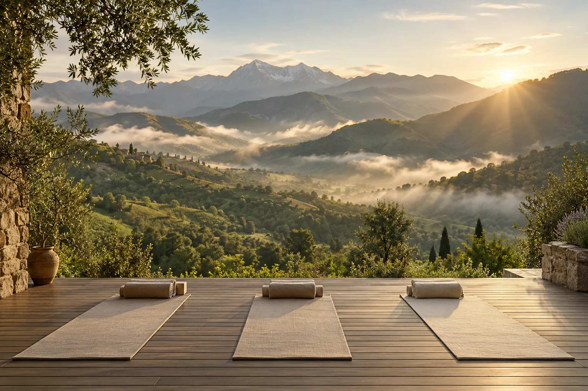

В своём темпе
Без соревнований и сложных асан ради красивой картинки. Движение, которое подходит именно вам.
Йога без спешки и ожиданий.
Через движение, дыхание и внимание —
к своему естественному равновесию.

ВДОХ. ВЫДОХ. ВЫ ЗДЕСЬ.Не стать кем-то другим.
А почувствовать, как это — быть собой.
Без соревнований и сложных асан ради красивой картинки. Движение, которое подходит именно вам.
Понятные объяснения, варианты упражнений и возможность остановиться, когда это нужно.
В уютном зале или дома на своём коврике. Выберите формат, который впишется в вашу жизнь.

МЕСТО ДЛЯ ВАШЕЙ ИСТОРИИЗдесь будет преподаватель,
с которым вам по пути.
Этот раздел расскажет о человеке за проектом: его подходе, обучении и опыте. А пока — идея, которую хочется сохранить: бережная практика, в которой есть место каждому.
Имя и настоящая фотография преподавателя
Образование, сертификаты и личная история
Выберите практику по настроению.
Пример недели · 26 октября — 1 ноября 2026
Расписание и стоимость приведены для примера. Время — московское. Запись откроется после запуска проекта.
Одно знакомство или маленькая традиция.
Место для практики найдётся всегда.
Познакомиться с подходом
и прислушаться к ощущениям.
Время для себя,
которое уже есть в календаре.
Личное пространство
для ваших вопросов и задач.
Все цены — примеры для согласования. Онлайн-оплата пока не подключена.

Мягкое движение, знакомство с дыханием и время для спокойного отдыха.
В зале · Дата уточняется
Визуальная концепция проекта. Все изображения созданы ИИ.
После запуска здесь будут настоящие фото и видеопрактики.
Гибкость не является условием для начала. Выберите практику для начинающих и заранее расскажите преподавателю о своём опыте.
Удобную одежду, которая не ограничивает движения, и воду. Наличие коврика в зале нужно будет уточнить после публикации реального адреса.
Планируется практика по видеосвязи. Платформа, ссылка и правила участия появятся после согласования с преподавателем.
Пока это демонстрация сайта. Формы показывают будущий процесс записи, но не отправляют заявки и не принимают оплату.
Начните с одного спокойного шага.
Телефон и email — скоро
Город и адрес зала уточняются
Здесь появятся настоящие истории
и впечатления после практики.